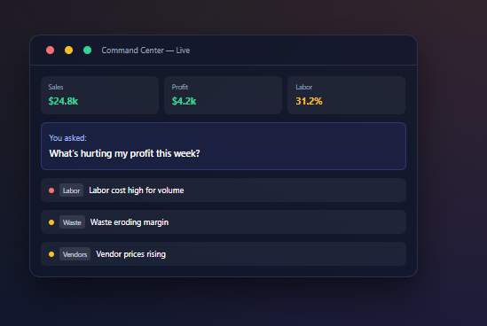

Operations Dashboard
Revenue, expenses, low-stock alerts, recent activity, and AI insights on one screen.
Pinnacle is an all-in-one manager — full POS with split checks and kitchen routing, menu engineering with sub-recipes and rolled-up ingredient tracking, omnichannel sync to six channels, payroll with holiday-pay rules, numerous integration options, loading dock & purchasing, 12-tab analytics, and an AI command center that answers questions like "What's hurting my profit this week?" using live data from every part of your business.
Hero shows the real app (mobile layout) — hit Expand for full desktop. Tab menus collapse to a hamburger on small screens.
Everything in one app
From the lunch rush to month-end P&L — manage daily operations and understand the business without juggling spreadsheets and disconnected tools.
Revenue, expenses, low-stock alerts, recent activity, and AI insights on one screen.
Ask plain-English questions. Cross-checks sales, labor, inventory, vendors, waste, reviews, and staff together.
Sales, food cost, labor, menu engineering, marketing, guests, ops, purchasing, forecasting, profit, external factors, executive.
Split checks, seat-by-table ordering, fire → ready → served → pay, cash/card/mobile payments via Square or Stripe Connect.
Route items to grill, fry, bar, or expo. Course apps/mains/dessert with hold & fire. Live kitchen display system.
Engineering matrix (stars & dogs), sales categories, direct ingredients, and sub-recipes — nest sauces and prep batches; all ingredients roll up for cost and depletion.
One source of truth — push to POS, QR tableside, website, DoorDash, Uber Eats, and Grubhub with per-channel markup.
Instant 86, live stock countdowns, and daypart menus — syncs to POS in real time when items run out.
Stock levels, barcode scan, waste logs, vendor pricing, and variance vs. theoretical usage from recipes.
Five role types with permissions, scheduling, timeclock, text-to-apply hiring, training & certifications, and retention analytics.
Pay runs from approved punches, jurisdiction-aware holiday premium rules, and embedded payroll provider hooks.
Minor labor guardrails, incident & OSHA tracking, digital log book, and audit-ready records.
POs, goods receipt, invoice scan, 3-way match, credit memos, and vendor EDI catalogs.
Live COGS, AVT variance, printable reports, and scenario forecasting for labor and sales.
Visual floor plan plus QR tableside menus guests open on their phones — same live menu as POS.
AI receipt scanning extracts vendor, amount, and category automatically.
Stripe subscription autopay for your plan. Connect Square or Stripe for guest card payments at the table.
Self-serve signup → restaurant details → optional sample data → billing setup → launch dashboard in minutes.
Numerous integration options — live POS inventory sync, QuickBooks/Xero/Sage journals, and Sysco/US Foods EDI.
AI categorizes menu, inventory, receipt, and facility photos.
Schedule posts and measure campaign ROI against real sales.
Switch locations — every metric, menu, and team scoped per restaurant.
Front & back of house
From the first tap to the last payment, every step is tracked for analytics and kitchen execution.
Items route automatically by category or explicit station assignment. Combos split to multiple stations. Course-level fire lets you hold apps while mains are still ordering.
The nervous system
A perfect system does not operate in a vacuum. Pinnacle connects POS, accounting, and vendor EDI so data flows without re-keying.
Deducts recipe ingredients the instant a ticket is fired to the kitchen — inventory matches what's on the line.
Pushes invoices, credits, expenses, and inventory values into QuickBooks, Xero, or Sage as clean journal entries.
Connect Sysco or US Foods — live catalogs, warehouse out-of-stock signals, and purchase orders submitted directly.
Browse numerous POS, payroll, accounting, reservations, and delivery integration options — connect live integrations or plan roadmap items.
Configure under Account → Integrations in the live demo — Twilio SMS, OpenTable/Resy, and more on the roadmap.
People & payroll
From the first shift on the floor to holiday premium calculations, team tools connect to labor analytics and payroll export.
Pinnacle calculates holiday premiums and pay previews in-app, then hands off disbursement to your connected payroll provider when configured.
Inventory & back office
Purchasing, receiving, and count workflows feed the same theoretical usage engine as your POS recipes.
Draft, send, and receive against POs — link lines to inventory and vendor catalogs.
Invoice OCR, 3-way match (PO · receipt · invoice), credit memo requests, and price spike alerts.
FIFO alerts, monthly cycle counts with zone routes, barcode scan, and variance vs. theoretical usage.
Live COGS, AVT variance, Crystal Ball forecasting, and print-ready financial reports.
◎ AI Command Center
The live demo in the hero is the real app — dashboard, orders, inventory, analytics, and Command Center. Responses pull from your real orders, schedules, invoices, and reviews when you run your own data.

Deep analytics
Every tab answers real manager questions with highlights, KPI cards, and AI-powered Run Analysis.
Stars, plowhorses, puzzles, and dogs — promote, reprice, and remove recommendations.
Profit by item, employee, shift, hour, channel, and campaign.
Weather, events, holidays — auto-learned impact on sales.
Pick a plan, create your account, add restaurant details, and optionally load sample data — guided wizard included.
Explore POS, menu engineering, KDS, and analytics in the hero window — click Expand for full desktop.
Every order, recipe depletion, and sale feeds analytics. Ask cross-domain questions anytime.
Pricing
Three self-serve plans for independents — billed per location per month. Group pricing for 2–10 locations; enterprise for franchises and custom rollouts.
Small shops & single-location cafes
$79/mo per location
Dashboard, menu, tables, basic inventory, basic staff, and limited AI — without a sales call.
Most independent restaurants
$249/mo per location
Your main plan — inventory depth, recipe costing, KDS, labor, menu engineering, and standard AI Command Center.
Owners serious about profit
$449/mo per location
Advanced AI, full analytics, unlimited OCR, purchasing, forecasting, integrations, and payroll export tools.
Multi-location / Group
Pro capabilities for restaurant groups — compare stores, roll up reporting, and manage permissions across locations.
Group plan
$599/mo
First location, then add more at Growth rate
Everything in Pro, plus:
Enterprise
For restaurant groups, franchises, and companies that need migration, API access, training, custom integrations, white-label, and SLAs.
| Plan | Price | Best for |
|---|---|---|
| Starter | $79/mo/location | Small shops |
| Growth | $249/mo/location | Most independents |
| Pro | $449/mo/location | Full analytics & AI |
| Group | $599 + $249/additional | 2–10 locations |
| Enterprise | Custom from $1,500/mo | Franchises & migration |
Add-ons
Optional extras — stack on any tier when you need more capacity or services.
| Add-on | Price |
|---|---|
| Extra users | $5/user/month |
| Extra location | $249/location/month |
| Receipt OCR over limit | $25/month |
| AI Pro usage pack | $49/month |
| Website + menu page | $99/month |
| Google Business Profile help | $99/month |
| Social media post scheduler | $49/month |
| Custom onboarding | $299 one-time |
| Data import / setup | $499 one-time |
| Custom feature request | Quote |
Use the embedded demo in the hero, expand it, and explore every module — works right on this page.